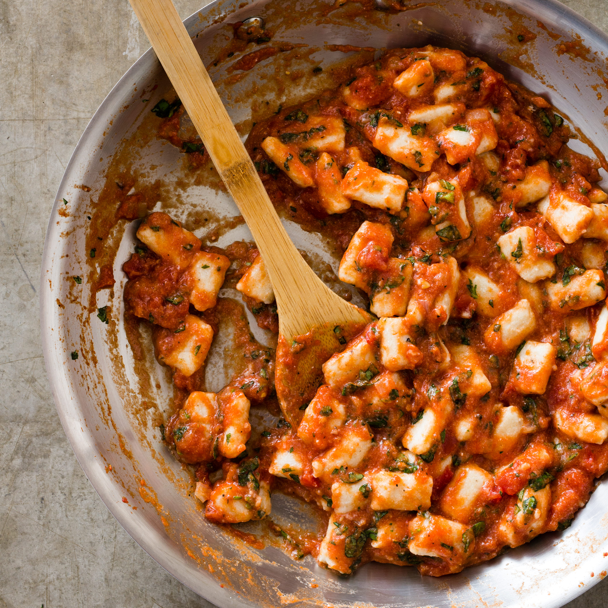

Ricotta Gnocchi

The Easiest Homemade Gnocchi Recipe
Love potato gnocchi? Allow me to introduce you to its quicker-and-easier-to-make,
ultra-light-and-pillowy, arguably-even-more-delicious cousin…
Bottom line — whether you’re a beginner with making your own homemade gnocchi,
or if you’re a potato gnocchi pro and are just looking for a quicker method, I
highly recommend giving the ricotta version a try. I think you’re going to love
them!
Ingredients
- 1 15-oz container of ricotta cheese
- 1 cup 00 or all-purpose flour
- 3/4 cup parmesan cheese
- 3 egg yolks
- 3/4 tsp salt
- 1/4 tsp pepper
Steps
- Boil large pot of salted water over high heat
- Mix ingredients on large wooden cutting board or in mixing bowl
- Once dough is formed, knead gently and form into large ball
- Cut dough ball into 8 slices and set aside
- Lightly flour board and roll each dough slice into long rope and cut diagonally into 1/2 inch pieces
- Carefully transfer gnocchi into boiling water to cook: once they float, drain gnocchi
- Serve immediately, tossed with your favorite sauce and topped with parmesan or romano cheese